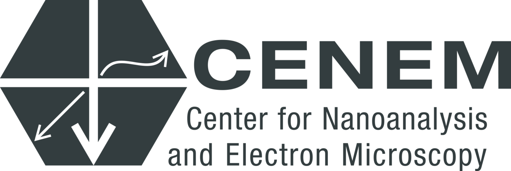
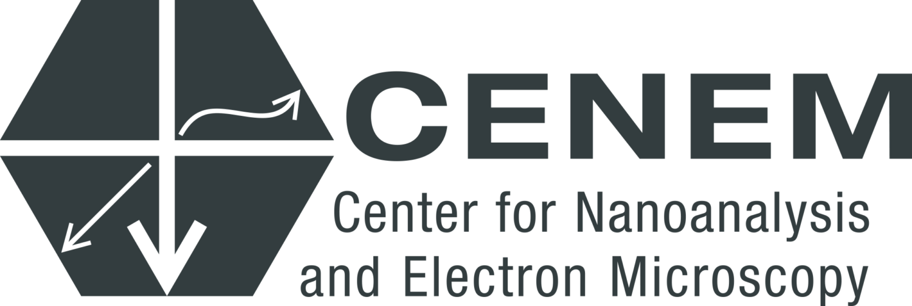
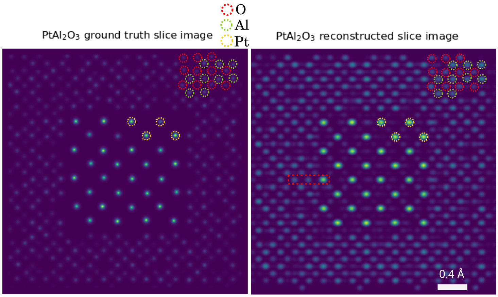

Sub-Ångstrom 3D Resolution,
Large-Volume Imaging
and Automation Advances
in Electron Ptychography
 


Successive approximations in STEM ptychography

\(\psi_{out} = (1+i\phi)\psi_{in}\)
\(\psi_{out} = A(\vec{r}) \cdot e^{i\sigma V(\vec{r})} \cdot \psi_{in}\)
\(\psi_{out} = \mathcal{M}_V(\psi_{in})\)
✅ Real-time results & calibration
✅ Fast reconstruction for thin samples
✅ 2.5D reconstruction for thick samples
✅ highest x-y resolution
Note
Each approximations has its use in ptychographic tomography
Our protagonists today: nanoscale particles and quantum materials
1️⃣ Transition metal chalcogenides in the few-chain limit
2️⃣ Strain-engineered Core-Shell Oxide particles
3️⃣ Strain-engineered chiral nanoparticles

Note
Quantum materials and nanoparticles are ideal test cases for our atomic resolution 3D imaging as we develop scalable algorithms
Ptychographic Tomography Solves Nanostructures

Note
First 3D atomic structure solved with phase-contrast tomography.
Novel ZrTe2 phase, confirmed stable with DFT simulations.
Depth Resolution Progress Over Time


Note
Algorithm development drives resolution records and depth of focus enhancements
Next step: Multi-Slice Ptychographic Tomography
for each tilt angle
and project the potential along z
✅ Advantages:
- Decouple tomographic alignment from ptychographic reconstruction
- Can use positions and alignment as input to E2E-MSPT

❌ Disadvantage:
- Loses some 3D info from MSP

3x DOF volumes display atomic resolution

Note
Volume size: (18.2 nm)3 Voxel size: 0.3 Å
Orthoslices reveal lattice in all 3 dimensions

Note
Lattice resolved, but Co atom contrast overpower O contrast
=> Around 1 Å z resolution required to resolve O atoms
End-to-end reconstruction - putting all pieces together
Fully E2E-MSPT reconstruction includes
- affine resampling of potential volume
- z-resampling of potential volume (save compute)
- batch-croppping and mixed-state multi-slice model
- far-field propagation
- gradient backpropagation through full model

Note
The most accurate approximation for 4D-STEM tomography to-date.
Difficulty: initialization of the model parameters

Successive approximations help initialize “nuisance parameters”

Note
Successive initialization reduces compute
overhead of the most accurate models
Sub-Ångstrom alignment accuracy demonstrated in simulations
Pt-Al2O3 core-shell nanoparticle


Note
Mean alignment error < voxel size (0.4 Å)
Limited-Angle Tomography is an option now


Note
Light and heavy atoms recovered in 3D with 90-degree tilt range.
Dose reduction by sub-sampling
Note
2.8 Å resolution with 2.2*104 e-/Å2 - virtual sub-sampling
0.82 Å resolution with 12x sub-sampling